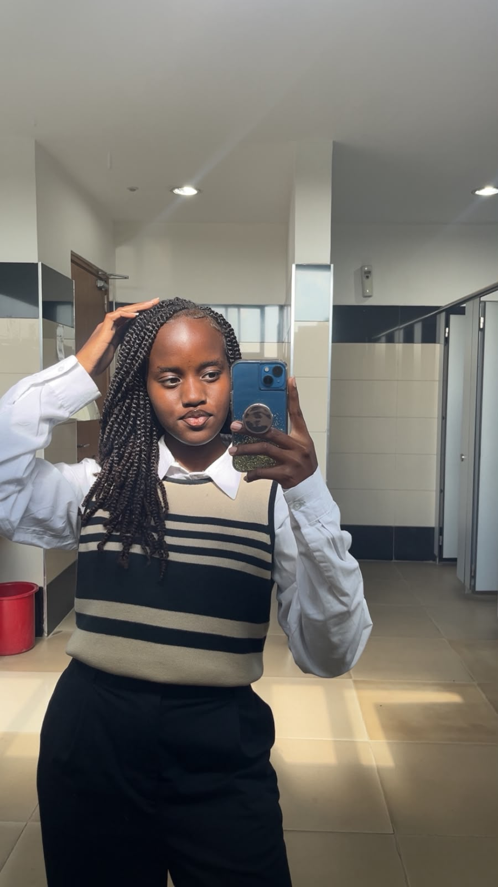

I am a student at Strathmore University pursuing a Diploma in Business Information Technology (DBIT). I am currently in my third semester. I am an ambitious and forward-thinking student who hopes to build a career that combines technology, data, and business to create meaningful impact on a large scale.
A typical day at university starts with a morning lecture on marketing and entrepreneurship. I then spend time at the Student Center where I work on assignments, projects, and interact with friends. During breaks, I often buy lunch from the university cafeteria. In the evening, I attend my Web Application Development class before heading home.
My favourite place on campus is the Student Center Rooftop. I enjoy the openness and lively atmosphere that allows me to express myself freely. It is also a great place to meet students, collaborate on projects, relax, and enjoy the view.
My advice to new students is to manage their time wisely, joining university can be overwhelming. Trying to balance both your social life and academic responsibilities. In all you do just make sure you have your priorities right and attend classes consistently. Actively participate in university activities. Clubs, sports even student government don't limit yourself. Building friendships and maintaining discipline can make the university experience more enjoyable and successful.
My experience at Strathmore University has been both challenging and rewarding. I have gained valuable knowledge, made amazing new friends, developed important skills, and grown in confidence. The experience has helped me become more disciplined, responsible, resilient and prepared for my future career. I am grateful for the opportunities and experiences that have shaped me into the woman I am today. I look forward to continuing my journey at Strathmore University and making the most of my time here.